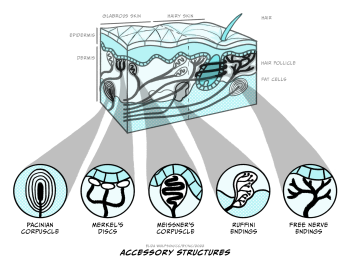
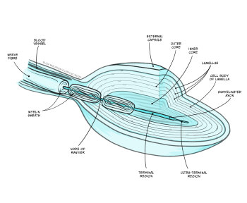
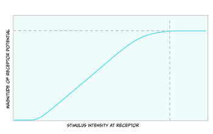
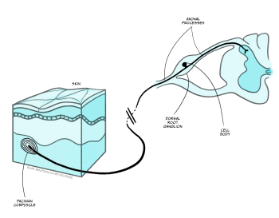
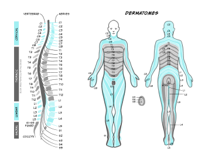
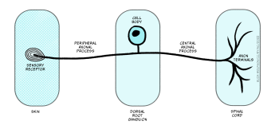
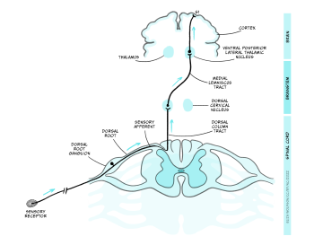
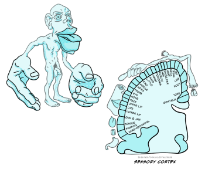
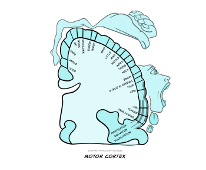

Feeling the world: our sense of touch
Touch comes before sight, before speech. It is the first language and the last, and it always tells the truth.
Margaret Atwood, Poet and Novelist. The Blind Assassin (2000)
As the opening quote suggests, touch is fundamental to our experiences of the world, including our interactions with others. It is therefore the place we begin our journey through the senses.
Spend a moment with your eyes closed and focus on the sensations you can feel on your skin and in your body. What kinds of things can you detect?
You could have come up with a range of answers here. For example, you might have noted the feel of your clothes on your skin, how rough or smooth the fabric is or how tightly they fit. You might have felt a cool breeze across part of your body from an open door or window. You could even have realised that your body position feels a little uncomfortable, even painful, where you have sat in the same position for too long.
What you are experiencing in the exercise above is somatosensation which means bodily senses. This includes the sense of touch, but also includes the sensing of temperature, pain and proprioception, of which the latter can be defined as the sense of our own body position. In this first section we will focus on touch, before examining pain in the next section.
Sensing touch: getting to grips with the skin
To understand how we detect touch information, we need to understand a little about the structure of our skin. The skin is the largest organ in the human body and it incorporates the sensory receptor cells that allow us to detect touch as well as blood vessels, sweat glands and various other specialised structures. Critically for our sense of touch, the skin can be described as a viscous liquid, much like golden syrup or honey. It is said to have viscoelasticity, which means that when forces are applied to it, stresses and strains are created within the skin that can be detected by sensory receptor cells.
Note that these sensory receptor cells are distinct from the receptors you would have read about when studying neurotransmitters. Sensory receptor cells are whole cells designed to detect sensory signals or stimuli rather than a subcellular structure which binds to neurotransmitters or other small molecules.
There are four main types of sensory receptor cells which are critical for our sense of touch, each named after the biologist who discovered them:
- Meissner’s corpuscles
- Merkel’s discs
- Pacinian corpuscles
- Ruffini’s endings
These receptors are mechanoreceptors because they detect a mechanical stimulus. They can all be classed as a type of modified neuron. This means that they have a cell body and axon and are capable of producing an action potential.
The four types of receptors are shown in Figure 4.1. You can see from this figure that they are positioned at different depths within the skin. Merkel’s discs and Meissner’s corpuscles are positioned superficially, whilst the Pacinian corpuscles and Ruffini’s endings are positioned deep within the skin. The positioning gives us a clue about what kind of stimuli these different touch receptors detect.

If a receptor is positioned very deeply within the skin, would you expect it to be able to detect very light or gentle touch?
No, you would not. The stresses and strains set up in the skin will be proportional to the stimulus so a very light touch to the skin will only create forces within the the superficial areas of the skin.
Scientists have now characterised these different receptors and have a good understanding of the types of stimuli they each respond to. A common feature of sensory systems is adaptation, which is a change in response of the receptor – normally a decrease – to a constant stimulus. Adaptation is very important in sensory systems because key information for our survival often comes from changing stimuli rather than constant ones. By signalling change, our sensory systems avoid wasting energy on signals that merely communicate that everything is staying the same, and therefore provide no new information. On this basis, touch receptors can be defined as fast or slow adapting receptors. The fast adapting receptors will stop responding very quickly to a constant stimulus whilst the slow adapting ones will likely continue to respond, albeit at a lesser level, to constant stimuli. This is summarised in Table 1.
|
Sensory receptor cells |
Location |
Activating stimulus |
Adaptation |
|
Meissner’s corpuscles |
Superficial |
Light touch and vibration |
Fast |
|
Merkel’s discs |
Superficial |
Light touch and pressure |
Slow |
|
Pacinian corpuscles |
Deep |
Heavy pressure and vibration |
Fast |
|
Ruffini’s endings |
Deep |
Skin stretch |
Slow |
Table 1. Characteristics of sensory receptor cells for touch
Before we look at how the body converts touch signals into neural signals, it is important to take note of the overall distribution of these receptors across the body, because this explains why some parts of the body are much more sensitive than others. If you have time, and someone willing to help you, have a go at the brief experiment outlined in Box 1 before you continue reading. If you do not have time, you can return to this at any point.
Box 1: Two-point discrimination experiment
This experiment demonstrates that different areas of the body differ in their ability to distinguish between a single stimulus and two stimuli placed on the skin. When two points (e.g., the ends of a cocktail stick or compass) are gently touched on the skin at the same time, they are usually felt as two different points. However, if they are very close together, they may only be detected as a single point. Different areas of the body will have different thresholds for which separation is felt and this is the ‘two-point discrimination threshold’.
You will need a helper for this experiment. Read all the steps carefully before you start and gather the following pieces of equipment:
- A large paper clip or similar object with two small points that can be bent into a ‘U’ shape such that both points or ends are level
- Material to serve as a blindfold
- A ruler or tape measure
Now follow the steps below (this assumes you are the experimenter and your helper is the participant):
Agree which of the three body parts you will investigate from the following: index finger, palm of hand, upper arm, forehead, thigh.
Explain to your participant that, whilst they are blindfolded, you will touch their skin with the paperclip and ask them to tell you whether they felt one or two points after each touch, noting in your explanation that you will randomly select one or two points to touch them with. Let them know that you will not tell them if they are right or wrong after each guess.
Once your participant is blindfolded you can begin testing. For the first body area apply either two points or a single point in a random order. For the two-point touches you should begin with the points very close together and gradually widen them. You are looking for the point at which they correctly state that they detect two points. At this point measure the distance between the two points. Remember not to tell your participant if they are correct when they guess. You should then repeat the process in the same body area, this time beginning with the points further apart, and bringing them together. As before, note the final distance at which they detect two points. Work out the average of the two distances and note this down as your discrimination threshold.
Now repeat all this on the other two body areas.
For reference here are some typical values in millimetres (mm):
- Index finger – 2 mm
- Upper arm – 47 mm
- Palm of the hand – 13 mm
- Forehead – 18 mm
- Thigh – 46 mm
If you map the thresholds for all areas of the body, you will find that some areas are more sensitive than others. For example, the upper lip and fingertips are much more sensitive than the back. This sensitivity arises because of the different receptor types and the receptive fields, that is the skin area where a touch will be detected by a single receptor cell. Where there is a high density of receptors with small, distinct receptive fields, areas are very sensitive. This is because two points, close together are still likely to fall in different receptive fields and therefore be perceived separately. In contrast areas where receptive fields are large or overlapping, leave areas less sensitive because two points will likely activate the same receptor and so be perceived as a single stimulus.
So far we have focused on the skin and the receptors within it that can detect touch information but we have not yet looked at how that detection occurs. For a sensory signal to be used by the nervous system, it must be converted into a neural signal, or a change in membrane potential. The process whereby a sensory stimulus is converted into a electrical signal in the form of a membrane potential is referred to as transduction.
From touch to nerve impulse
Transduction is a common process across all of our sensory systems but exactly how it works varies with the sensory stimulus and receptor involved. Much of what we know about transduction in touch comes from investigations in Pacinian corpuscles because these have been the easiest to access for laboratory tests. Many of the studies done have actually focused on cells within cats, which closely resemble those in humans.
Figure 4.2 shows the structure of a Pacinian corpuscle. In this figure you can see the corpuscle is made up of multiple layers, like an onion skin. In the middle of these layers there is a sensory nerve ending with an unmyelinated tip. Remember that myelin is a fatty substance that typically covers axons to provide electrical insulation.

When a force is applied to the skin, the layered corpuscle acts as a mechanical filter and the strain created by the force is transmitted to the unmyelinated tip through the corpuscle. The membrane of this tip contains mechano-sensitive ion channels. The term mechano-sensitive indicates that the channels will open and close depending on the mechanical force applied to them.
During transduction, the force applied causes the ion channels to open. This causes an influx of sodium ions (Na+) into the unmyelinated tip of the Pacinian corpuscle. You should remember from your studies of the resting and action potentials that ions will move down their electrical and chemical gradients. In this case, sodium ions, which are positively charged, are more abundant outside the corpuscle in the positively-charged extracellular space. When the ion channels open, they move into the negatively-charged cell which has a lower concentration of the ion.
Using your understanding of action potentials, what impact do you think this influx of sodium ions will have on the Pacinian corpuscle?
Hopefully you have noted that it would depolarise the cell as the inside becomes less negative than it is at rest. ‘Rest’ in this case means ‘in the absence of any touch stimulus’.
This depolarisation is referred to as a receptor potential because it is a change in membrane potential within a sensory receptor cell caused by the presence of a sensory stimulus. The receptor potential is similar to a post-synaptic potential in that it degrades quite rapidly, but if there is sufficient depolarisation at the point where the unmyelinated tip meets the first myelinated region (Figure 4.2), an action potential will be triggered.
You should recall from your studies of action potentials that they involve a coordinated movement of sodium and potassium ions across the membrane and this type of signal can be transmitted over long distances. This is particularly important in the senses because some of our sensory receptor cells are a very long way from our spinal cord and brain. In the case of touch, sensory receptor cells in the toe must be able to send signals over a metre to the spinal cord.
Before we look closely at the pathway touch information takes to the brain, it is useful to note the relationship between the size of the stimulus and the size of the receptor potential. Figure 4.3 shows that as the stimulus increases in intensity, the receptor potential gets larger.

Action potentials are all-or-nothing signals, meaning that they cannot change in size. What do you think a larger receptor potential means for the action potentials created?
Because the action potentials cannot get bigger, they must encode the larger stimulus in another way. The way they do this is through a greater frequency of action potentials.
Now that an action potential has been created in the neurons that detect touch, this information must travel to the brain.
Touch pathways to the brain
Whilst the sensory endings of these sensory receptor cells are found all over the body, their cell bodies are found in the dorsal root ganglion, shown in Figure 4.4.

Recall that the structure of the spinal cord is relatively simple and repeats from the base (sacral regions) to the top (cervical regions). This repeating structure means that there is a dorsal root ganglion at every segment, or height, of the spinal cord. Exactly which one the information enters into depends on where in the body the information has come from. Figure 5 shows the cervical, thoracic, lumber and sacral nerves entering the different segments of the spinal cord and the regions of the body they receive information from.

Using Figure 4.5, can you identify which spinal nerve comes from the thumb?
C6 carries information from the thumb into the spinal cord.
Note that the figure makes no reference to information coming from our face. There is a separate system for carrying somatosensory information from the face, called the trigeminal system, which operates in a very similar way to that described here except that the sensory neurons enter the central nervous system at the brainstem instead of the spinal cord.
Once information from the sensory nerve ending reaches the cell body in the appropriate dorsal root ganglion, it carries on into the spinal cord via the dorsal root, which is formed of the axons of these sensory cells. These neurons have a slightly different structure to typical neurons found in the brain because they have a bifurcating axon, meaning their axon splits in two (Figure 4.6) and this allows the same neuron to transmit information from the sensory nerve ending where the mechano-sensitive channels are, beyond the cell body and into the spinal cord.

There are multiple pathways by which touch information can reach the brain, but here we will focus on the most critical pathway, called the dorsal column/medial lemniscal pathway. This pathway is shown in Figure 4.7.

The axons enter the spinal cord and pass directly up it, on the same side of the midline, until they enter the dorsal column nuclei (DCN) in the medulla where they synapse with the next neuron in the pathway. This next neuron is referred to as the ‘second order neuron’ because the sensory receptor cell is a modified neuron, and was therefore the first order neuron. The axons of the second order neurons travel in a pathway called the medial lemniscus to the thalamus. Specifically, they reach an area called the ventral posterior lateral thalamic nucleus (VPL), where they synapse again with the third order neuron. The third order neuron carries the signal to the primary somatosensory cortex (S1) within the parietal lobe.
Representation of touch in the somatosensory cortex has long been understood to be topographically organised, meaning that areas of the body are represented in a way that is proportional to the input they receive, creating a mini map of the body in S1. This is known as the somatosensory homunculus or ‘little man’ and this was first proposed in 1937 (Figure 4.8) (Penfield & Boldrey, 1937). Much of the research that led to this proposal was conducted by Penfield, a neurosurgeon, who applied electrical stimulation to the cortical surface doing surgery in patients with epilepsy (Box 2).

Box 2: Mapping the brain

Wilder Penfield (1891-1976, Figure 9) conducted surgery in patients with epilepsy or brain tumours. During this surgery he would apply a small electrical stimulation to the outer surface of the exposed cortex. Patients were conscious during this surgery and able to communicate with Penfield, meaning they could tell Penfield what they felt when he applied stimulation to different regions. The patient being conscious is not uncommon in brain surgery and allows the surgeons to carefully target specific areas.
Over the years, Penfield conducted cortical stimulation on over 100 patients and he kept meticulous notes and drawings indicating responses to specific areas of stimulation. It is from this research that the homunculus, which is Latin for ‘very small human’, was born. Penfield’s work is not without its limitations – it is noteworthy that exact stimulation patterns and intensity were not recorded, meaning that the final representation may not be entirely accurate (Matias, 2020). However, despite the potential inaccuracies, the idea has persisted and is still used to inspire or explain research almost 100 years later (Pan, Peck, Young, & Holodny, 2012).
The sensory homunculus is matched by a motor homunculus mapped onto the motor cortex (Figure 4.10). The two representations are connected and the connection between the two is likely to be critical for some aspects of movement including fine motor control. For example, researchers have found that impaired connectivity between these areas can underpin poor fine motor control in autism spectrum disorder (Thompson et al., 2017).

It is important to recognise that touch processing does not stop at the level of the primary somatosensory cortex. Research suggests an extensive cortical network is involved in processing touch information with signals from S1 continuing the secondary somatosensory cortex (S2) also located in the parietal cortex, and the insular cortex, a cortical area nestled deep within the cortical folds between the parietal and temporal lobes (Rullmann, Preusser, & Pleger, 2019).
The perception of touch
You have now considered how touch stimuli are detected by sensory receptor cells, the process of transduction and how the information travels to, and is represented in, the brain. In this final section we will look at how touch is perceived, that is, what meaning can be gained from our sense of touch.
Touch could be perceived as simply the physical encountering of objects in our environment but in fact it is much more than this. We do not simply encounter objects and identify that they are present. Rather we can glean detail of the object’s size, weight, texture, stiffness and various other characteristics through our sense of touch. All of this allows us to identify specific objects and make appropriate behavioural responses to them.
Exactly what we perceive from touch may depend on the type of touch that we engage in. Touch can be categorised as either active or passive. Active touch requires the movement of the fingers over the object, that is an intentional interaction with the stimulus, whilst passive touch simply involves the object being pressed against the fingers. An example of active touch is when you reach out to feel the fabric of clothes you are considering buying and run it between your fingers to establish qualities such as smoothness, thickness and weight. By contrast, passive touch would be having the fabric pushed against your fingers.
Early research suggested that active touch may be more informative in determining object shape (Gibson, 1962), but later work controlling for details such as the pressure with which the object was applied to the skin, showed little difference between the two types of touch, or even an advantage of passive touch (Chapman, 1994). Activation in the primary somatosensory cortex has been shown to differ between the two modes, with greater activation under active touch conditions. It has been suggested that the greater activation from active touch could arise because of activation from the motor cortex into the primary somatosensory cortex as the fingers move (Simões-Franklin, Whitaker, & Newell, 2011).
Researchers have also argued that the differences in these two types of touch can be underpinned by the role of other systems, specifically proprioception. Active touch will activate the same sensory receptor cells in the skin as passive touch, but it will also activate proprioceptive receptors, that is the ones that detect the position of the body, in this example, the fingers. It has been proposed that both the touch and proprioceptive inputs converge in the brain, causing greater excitation (Cybulska-Klosowicz et al., 2020). However, other researchers have countered this, suggesting that the two inputs compete rather than combine within the brain (Dione & Facchini, 2021). There is still much work to be done to fully understand the effects of active and passive touch on the brain.
Touch and social bonding
It should be clear from what you have read so far that touch is extremely important for perceiving the world around us including identifying the objects that our bodies come into contact with. This kind of touch can be considered as discriminatory touch. However, we do not just come into contact with inanimate objects! Much of the physical contact we have in the world is with other people and in this context, touch perception is often about affective experience, rather than discriminatory. This affective touch plays a critical role in social bonding (Portnova, Proskurnina, Sokolova, Skorokhodov, & Varlamov, 2020).
Affective touch begins from a very early age, with parent-infant touch a key part of the nurturing process. A large body of research now shows links between early nurturing tactile interactions to later life social and emotional functioning. This relationship is thought to be mediated in part by the hypothalamic-pituitary-adrenal (HPA) axis which underpins our body’s stress responses and can be suppressed by various hormones, including oxytocin (Walker & McGlone, 2013). Research in rodents has shown that greater nurturing behaviour in the form of licking, grooming, huddling, and playing results in a greater density of connections in the somatosensory cortex of the offspring (Seelke, Perkeybile, Grunewald, Bales, & Krubitzer, 2016).
Such comparisons are difficult to conduct in people because it would be unethical to divide human infants and parents into high and low nurturing conditions. However, one approach is to consider a group who would likely have experienced reduced nurturing without any experimental intervention. This approach was taken by a group of researchers who compared care-leavers with non care-leavers in the UK (Devine et al., 2020). They noted that the main reason for entering care in the UK is neglect and abuse and inferred from this that those in care may have received reduced tactile nurturing in infancy. The researchers used a range of measures to look at sensitivity and found care-leavers to be less sensitive to the affective components of touch.
It is not just early nurturing that can alter touch sensitivity and affective touch. Research has found that levels of empathy (Schaefer, Kühnel, Rumpel, & Gärtner, 2021) and loneliness (Saporta et al., 2022) can also have an effect on how people perceive affective touch. Additionally, the presence of certain diagnoses may also impact on touch perception. For example, individuals with Autism Spectrum Disorder have impaired responses to interpersonal touch (Baranek, David, Poe, Stone, & Watson, 2006).
You have now completed the first section on the senses with this section on touch. This section has introduced you to some key concepts including transduction, sensory pathways and the wider social implications of our senses.
Key takeaways
In this section you have learnt:
- The sense organ for touch is the skin, the largest organ in the body, which contains the sensory receptor cells critical for touch – Meissner’s corpuscles, Merkel’s discs, Pacinian corpuscles and Ruffini’s endings
- Each type of sensory receptor cell for touch can be found in a specific location within the skin and can give rise to a specific sensation. Receptors also differ in how quickly they adapt
- The type of receptors found and how densely they are packed determines the sensitivity of different parts of the body
- Sensory information enters the spinal cord and rises to the level of dorsal column nuclei in the medulla before crossing to the contralateral side in the medial lemniscus. After this it enters the ventral posterior lateral thalamic nuclei before continuing to the primary somatosensory area and other cortical regions for further processing
- Touch can serve both discriminatory and affective functions and can be considered in terms of active and passive touch
- Affective touch is critical for social and emotional functioning through its role in social bonding. Early adversity in the form of lack of nurturing tactile stimulation can have a long-lasting impact. Altered perception of affective touch can also be related to empathy, loneliness and the presence of diagnoses such as autism spectrum disorder.
References
Baranek, G. T., David, F. J., Poe, M. D., Stone, W. L., & Watson, L. R. (2006). Sensory experiences questionnaire: discriminating sensory features in young children with autism, developmental delays, and typical development. J Child Psychol Psychiatry, 47(6), 591-601. https://doi.org/10.1111/j.1469-7610.2005.01546.x
Chapman, C. E. (1994). Active versus passive touch: factors influencing the transmission of somatosensory signals to primary somatosensory cortex. Canadian Journal of Physiology and Pharmacology, 72(5), 558-570. https://doi.org/10.1139/y94-080
Cybulska-Klosowicz, A., Tremblay, F., Jiang, W., Bourgeon, S., Meftah, E.-M., & Chapman, C. E. (2020). Differential effects of the mode of touch, active and passive, on experience-driven plasticity in the S1 cutaneous digit representation of adult macaque monkeys. Journal of Neurophysiology, 123(3), 1072-1089. https://doi.org/10.1152/jn.00014.2019
Devine, S. L., Walker, S. C., Makdani, A., Stockton, E. R., McFarquhar, M. J., McGlone, F. P., & Trotter, P. D. (2020). Childhood Adversity and Affective Touch Perception: A Comparison of United Kingdom Care Leavers and Non-care Leavers. Frontiers in Psychology, 11. https://doi.org/10.3389/fpsyg.2020.557171
Dione, M., & Facchini, J. (2021). Experience-driven remodeling of S1 digit representation in awake monkeys: the challenge of comparing active and passive touch. J Neurophysiol, 125(3), 805-808. https://doi.org/10.1152/jn.00380.2020
Gibson, J. J. (1962). Observations on active touch. Psychological Review, 69(6), 477-491. https://doi.org/10.1037/h0046962
Matias, C. M. (2020). Edwin Boldrey and Wilder Penfield’s homunculus: From past to present. World Neurosurgery, 135, 14-15. https://doi.org/10.1016/j.wneu.2019.11.144
Pan, C., Peck, K. K., Young, R. J., & Holodny, A. I. (2012). Somatotopic organization of motor pathways in the internal capsule: a probabilistic diffusion tractography study. AJNR American Journal of Neuroradiology, 33(7), 1274-1280. https://doi.org/10.3174/ajnr.A2952
Penfield, W., & Boldrey, E. (1937). Somatic motor and sensory representation in the cerebral cortex of man as studied by electrical stimulation. Brain, 60(4), 389-443. https://doi.org/10.1093/brain/60.4.389
Portnova, G. V., Proskurnina, E. V., Sokolova, S. V., Skorokhodov, I. V., & Varlamov, A. A. (2020). Perceived pleasantness of gentle touch in healthy individuals is related to salivary oxytocin response and EEG markers of arousal. Experimental Brain Research 238(10), 2257-2268. https://doi.org/10.1007/s00221-020-05891-y
Rullmann, M., Preusser, S., & Pleger, B. (2019). Prefrontal and posterior parietal contributions to the perceptual awareness of touch. Scientific Reports, 9(1), 16981. https://doi.org/10.1038/s41598-019-53637-w
Saporta, N., Peled-Avron, L., Scheele, D., Lieberz, J., Hurlemann, R., & Shamay-Tsoory, S. G. (2022). Touched by loneliness-how loneliness impacts the response to observed human touch: a tDCS study. Social Cognitive and Affective Neuroscience, 17(1), 142-150. https://doi.org/10.1093/scan/nsab122
Schaefer, M., Kühnel, A., Rumpel, F., & Gärtner, M. (2021). Dispositional empathy predicts primary somatosensory cortex activity while receiving touch by a hand. Scientific Reports, 11(1), 11294. https://doi.org/10.1038/s41598-021-90344-x
Seelke, A. M. H., Perkeybile, A. M., Grunewald, R., Bales, K. L., & Krubitzer, L. A. (2016). Individual differences in cortical connections of somatosensory cortex are associated with parental rearing style in prairie voles (Microtus ochrogaster). Journal of Comparative Neurology, 524(3), 564-577. https://doi.org/10.1002/cne.23837
Simões-Franklin, C., Whitaker, T. A., & Newell, F. N. (2011). Active and passive touch differentially activate somatosensory cortex in texture perception. Human Brain Mapping, 32(7), 1067-1080. https://doi.org/10.1002/hbm.21091
Thompson, A., Murphy, D., Dell’Acqua, F., Ecker, C., McAlonan, G., Howells, H., Baron-Cohen, S., Meng-Chuan, L., Lombardo, M. V., the MRC AIMS Consortium, & Catani, M. (2017). Impaired communication between the motor and somatosensory homunculus is associated with poor manual dexterity in autism spectrum disorder. Biological Psychiatry, 81(3), 211-219. https://doi.org/10.1016/j.biopsych.2016.06.020
Walker, S., & McGlone, F. (2013). The social brain: neurobiological basis of affiliative behaviours and psychological well-being. Neuropeptides, 47(6), 379-393. https://doi.org/10.1016/j.npep.2013.10.008